車に乗ろう
🎯 この章でできるようになること
- 3Dの車のビヘイビアをつけて、トラックを走らせられる
- 「ビヘイビアを有効化/無効化する」アクションで、ビヘイビアを止めたり動かしたりできる
- 変数を使って「乗っている／乗っていない」を覚えさせられる
- 「もしそれ以外の場合」（そうでなければ、もし〜なら）を使える
2-1. この章で作るしくみ
トラックの近くで E キーを押すと乗りこみ、もう一度 E を押すと降りるようにします。
乗っている間は、主人公を見えなくして、同じ W・A・S・D でトラックを運転できるようにします。
乗っていない
トラックが近い
主人公を見えなくして、歩く操作を止める
トラックの運転操作を動かす
乗っている
主人公をトラックの横に出して、歩く操作を動かす
トラックの運転操作を止める
2-2. トラックを置こう
「シーンオブジェクト」の右の「＋」から、第1章と同じように「Zombie Apocalypse」のパックを開きます。
「Vehicle」のフォルダを開くと、車が6台並んでいます。
「Vehicle Truck」を選んで、右下の「シーンに追加」を押します。
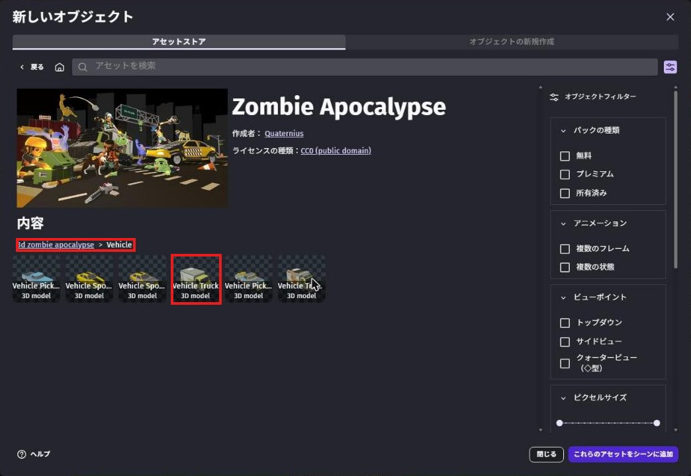
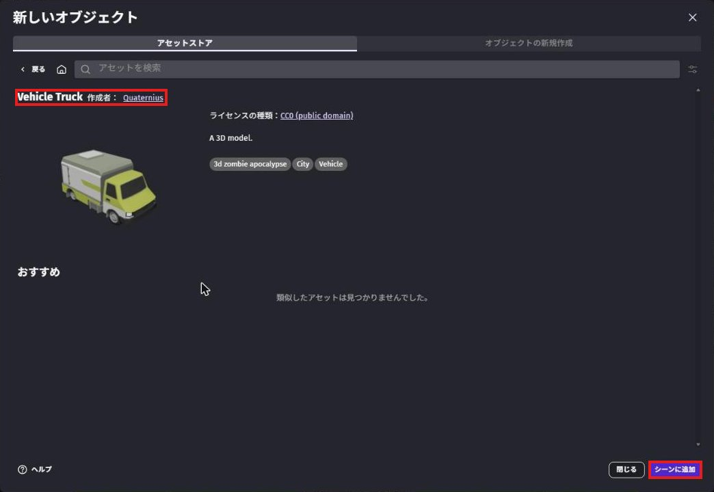
一覧に増えた「Vehicle_Truck」を右クリックして「名前の変更」を選び、名前を Truck にします。
Truck をクリックして、左の「デフォルトのサイズ」の 幅 を 160 にします（少し大きくする）。
右上の「2D」の画面で、Truck を道路の上にドラッグして置きます。
置いたトラックをクリックして、X を 680、Y を 450、Z を 10 にします。
「回転」のいちばん右を -90 にして、トラックの頭を奥に向けます。
2-3. トラックを走れるようにしよう
右の一覧で Truck をクリックし、左の「ビヘイビア」の右の「＋」を押します。
「オブジェクトに新しいビヘイビアを追加」の画面が開くので、「ビヘイビアを検索」の欄に car と入力します。
「3D物理カー」（3Dの物理で動く車）を選びます。
もう一度「＋」を押して、「3Dカーのキーボードマッパー」（キーボードで車を動かす）もつけます。
「3Dカーのゲームパッドマッパー」や、2Dの「物理カー」とまちがえないように注意してね。
検索の欄には前の文字が残っていることがあるので、消してから入力しよう。
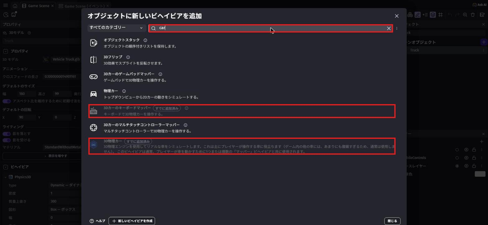
拡張機能の更新をたずねる画面が出たら、更新をスキップするボタンを押します。
教科書と同じ状態で進めるためです。
「3D物理カー」をつけると、「3D物理エンジン」も自動でつきます（ビヘイビアの欄では「Physics3D」という名前で出ます）。
タイヤが回って進む、曲がる、ブレーキをかける、といった動きを全部計算してくれます。
そのままだとトラックが重すぎて、なかなか進みません。
左の「ビヘイビア」の「Physics3D」の「質量上書き」（重さを決める）に 300 と入力します。
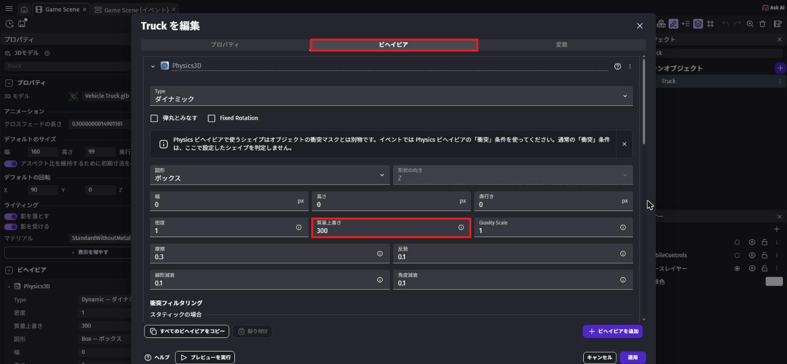
300（赤枠）にする。写真は「Truck を編集」の「ビヘイビア」タブで、左のビヘイビアの欄と同じ設定ができる「PhysicsCar3DKeyboardMapper」のキーは、最初は矢印キーになっています。
歩くときと同じキーで運転できるように、次のように変えます。
| 欄 | 選ぶキー |
|---|---|
| Up key（前に進む） | w |
| Down key（うしろに下がる） | s |
| Left key（左に曲がる） | a |
| Right key（右に曲がる） | d |
Hand brake key（サイドブレーキ）は Space のままでOK。
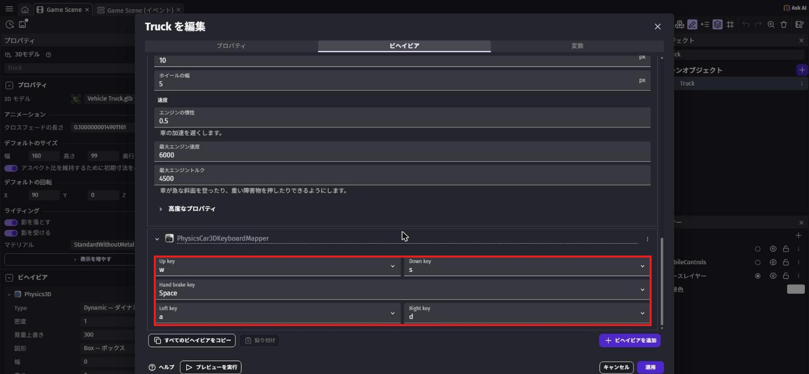
2-4. 乗っているかを覚える変数を作ろう
シーンの何もないところをクリックしてから、左の「シーン変数」の右にある、四角から矢印が出ているボタンを押します。
「Game Scene 変数」の画面が開くので、右上の「変数を追加」を押して、名前を InCar にします。
種類（「数値」と書いてある所）を「真偽値」に変えます。
最後に「適用」を押します。
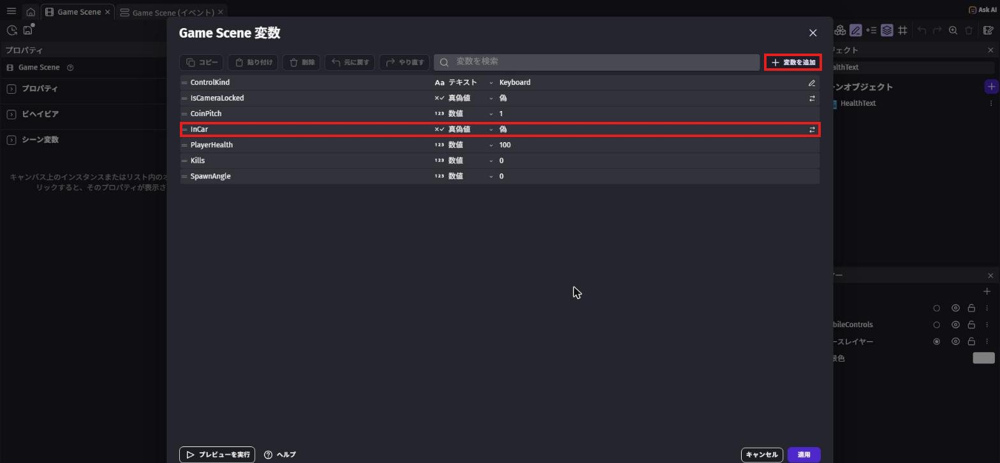
InCar を作り、種類を「真偽値」にする（まん中の赤枠）。写真は完成後のプロジェクトで撮ったので、ほかの変数も並んでいる「乗っている？」の答えを入れておくのにぴったり。
最初は「偽」（乗っていない）から始まります。
2-5. 乗る・降りるのイベントを作ろう
上のタブで「Game Scene (イベント)」を開きます。
いちばん下の「+ 追加...」→「イベントグループ」を選び、グループの名前を Truck にします。
グループを右クリックして「追加」→「サブイベント」を選ぶと、グループの中にイベントを作れます。
条件に「シーンが始まった」を入れます。
アクションの検索で ビヘイビアを有効化 と入力し、「ビヘイビアを有効化/無効化する」を選びます。
オブジェクトは Truck、「ビヘイビア」の欄は PhysicsCar3DKeyboardMapper、「有効化する？」は「いいえ」にして、「OK」を押します。
イベントシートには「Truck の PhysicsCar3DKeyboardMapper ビヘイビアを有効化する：いいえ」と出ます。
これで、乗っていないのにトラックが動いてしまうのを防げます。
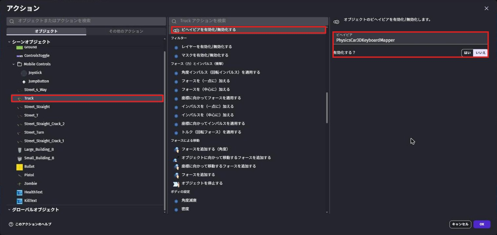
ビヘイビアを消すわけではないので、あとで「はい」にすればすぐ元にもどります。
1つ目のイベントをクリックして、Shift + A を押すと、下に新しいイベントができます。
条件を3つ入れます。
キーが押されたで検索 →「キーが押された」（入力 › キーボード）、「チェックするキー」はe変数の値で検索 →「変数の値」（全般 › 変数）、「変数」はInCar、「比較する値」は「偽」距離で検索 →「2つのオブジェクト間の距離」、オブジェクトはPlayer、「オブジェクト2」はTruck、「距離」は200
「2つのオブジェクト間の距離」のすぐ下にある「Distance between two objects in 3D」ではないので注意してね。
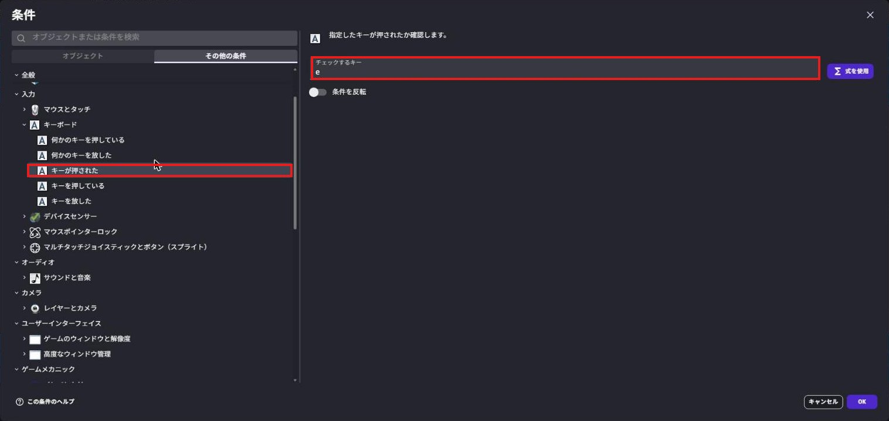
e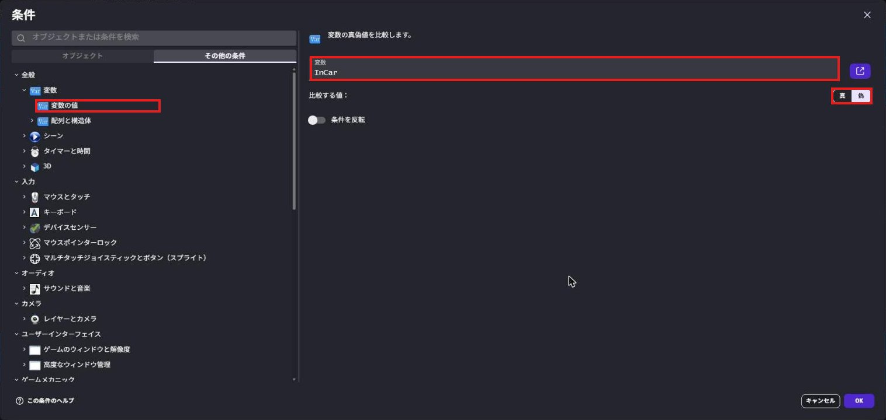
InCar が「偽」（乗っていない）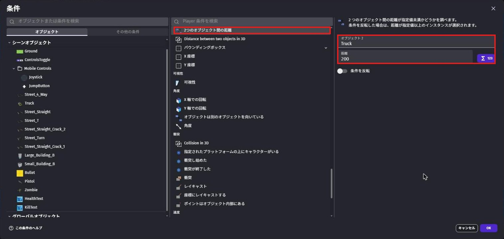
アクションを6つ入れます。
変数の値を変更で検索 →「変数の値を変更」、InCarの「値」を「真に設定」非表示で検索 →「非表示」、Player（主人公を見えなくする）- 「ビヘイビアを有効化/無効化する」で、
PlayerのPlatformer3DKeyboardMapperを「いいえ」（歩く操作を止める） - 「ビヘイビアを有効化/無効化する」で、
PlayerのPhysicsCharacter3Dを「いいえ」 - 「ビヘイビアを有効化/無効化する」で、
PlayerのPhysics3Dを「いいえ」（トラックとぶつからないようにする） - 「ビヘイビアを有効化/無効化する」で、
TruckのPhysicsCar3DKeyboardMapperを「はい」（運転できるようにする）
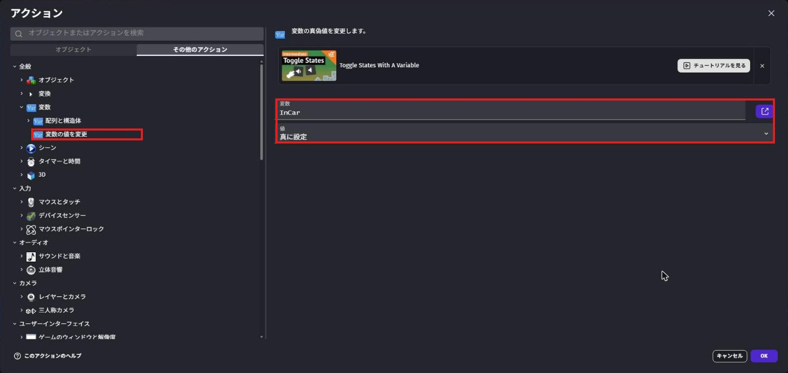
InCar を「真に設定」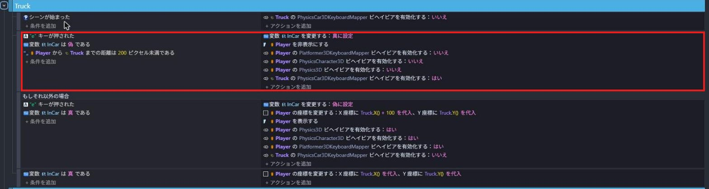
乗りこむイベントの何もないところを右クリックして、「追加」の中から「それ以外の場合」（イベント）を選びます。
「それ以外の場合」は、「上のイベントが動かなかったときだけ、こっちを調べる」という特別なイベントです。
条件を入れると、表示が「もしそれ以外の場合」に変わります。
条件は2つ。
- 「キーが押された」でキーは
e - 「変数の値」で
InCarが「真」
アクションは7つ。
- 「変数の値を変更」で
InCarを「偽に設定」 位置で検索 →「位置」、Playerの「X 座標」をTruck.X() + 100、「Y 座標」をTruck.Y()（演算子はどちらも「＝（代入）」。トラックの横に出す）表示で検索 →「表示」、Player- 「ビヘイビアを有効化/無効化する」で、
PlayerのPhysics3Dを「はい」 - 「ビヘイビアを有効化/無効化する」で、
PlayerのPhysicsCharacter3Dを「はい」 - 「ビヘイビアを有効化/無効化する」で、
PlayerのPlatformer3DKeyboardMapperを「はい」 - 「ビヘイビアを有効化/無効化する」で、
TruckのPhysicsCar3DKeyboardMapperを「いいえ」
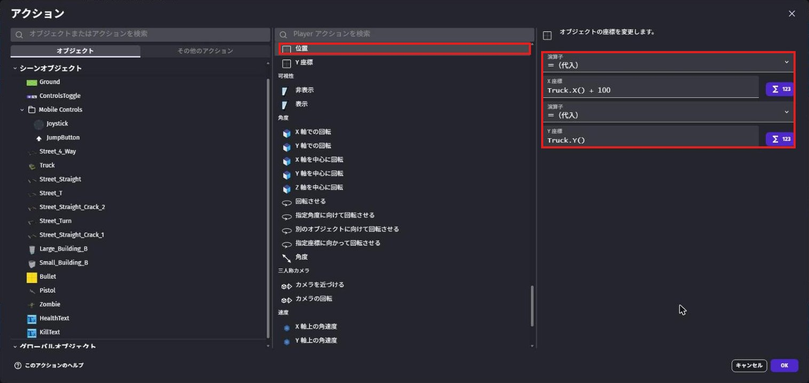
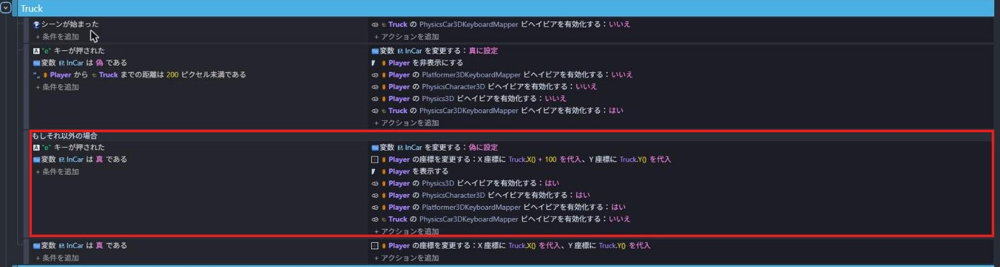
なぜ「それ以外の場合」を使うの？
ふつうのイベントを2つ並べると、乗りこんだ直後に、同じ E キーで「降りる」イベントまで動いてしまいます。
1回押しただけで、乗ってすぐ降りてしまうのです。
「それ以外の場合」にしておけば、乗りこむイベントが動いたときは、降りるイベントは調べられません。
カメラは主人公（Player）を追いかけています。
そこで、乗っている間は、見えない主人公をトラックの位置に動かし続けます。
「もしそれ以外の場合」のイベントをクリックして Shift + A で新しいイベントを作ります。
条件は「変数の値」で InCar が「真」。
アクションは「位置」で、Player の X 座標を Truck.X()、Y 座標を Truck.Y()。
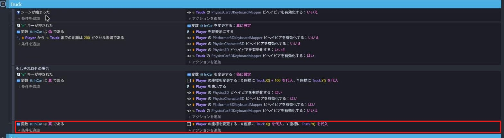
2-6. 運転してみよう
保存してから「プレビュー」を押します。
W でトラックの近くまで歩いて、E を押します。
主人公が消えて、W・A・S・D でトラックが走れば成功！
もう一度 E を押すと、トラックの横に主人公が出てきます。

💪 やってみよう
ビヘイビアの「PhysicsCar3D」には、スピードやパワーの数字があります。
「最大エンジン速度」や「最大エンジントルク」を変えて、自分好みのトラックにしてみよう。
「高度なプロパティ」を開くと、曲がりやすさなどの数字もあります。
ヒント
数字を大きくしすぎると、トラックがひっくり返ることがあります。
少しずつ変えて、そのたびにプレビューで確かめよう。
2-7. 🚨 つまずきポイント集
E を押しても乗れない
原因: トラックから遠い、またはキーの設定ちがい。
直し方: トラックのすぐそばまで歩いてから押そう。
条件の距離（200）や、キーが e になっているかも確かめよう。
乗っていないのにトラックが動く／主人公とトラックがいっしょに動く
原因: 手順7の「はじめは運転操作を止めておく」イベントがない。
直し方: 「シーンが始まった」で、Truck の PhysicsCar3DKeyboardMapper を「いいえ」にしよう。
トラックがほとんど進まない
原因: トラックが重すぎる。
直し方: 手順4の「質量上書き」が 300 になっているか確かめよう。
1回押しただけで、乗ってすぐ降りてしまう
原因: 降りるイベントが「もしそれ以外の場合」になっていない。
直し方: 降りるイベントを消して、手順10のとおり右クリック →「追加」→「それ以外の場合」で作りなおそう。
2-8. ✅ チェックリスト
全部チェックできたら第2章クリア！
🎉 次回は、主人公に銃を持たせて、撃てるようにするよ。